NotebookLM – Google: Ο έξυπνος ψηφιακός σας βοηθός μελέτης
Ένα διαδραστικό μάθημα γνωριμίας με το NotebookLM, το εργαλείο τεχνητής νοημοσύνης της Google που «διαβάζει» τα δικά σας έγγραφα και σας βοηθά να τα κατανοείτε, να τα οργανώνετε και να τα μετατρέπετε σε γνώση — από τη σύνδεση και το πρώτο σημειωματάριο μέχρι την ενότητα Studio.
Μαθησιακοί στόχοι
Να κατανοήσετε τι είναι το NotebookLM και πώς λειτουργεί ως «έξυπνος αναγνώστης» των δικών σας πηγών.
Να συνδεθείτε στο εργαλείο με τον λογαριασμό Google σας και να περιηγηθείτε στο περιβάλλον του.
Να δημιουργήσετε το πρώτο σας σημειωματάριο (Notebook) και να προσθέσετε και να διαχειριστείτε τις πηγές σας.
Να κάνετε ερωτήσεις στις πηγές σας και να αξιοποιείτε τις παραπομπές των απαντήσεων.
Να αποθηκεύετε σημειώσεις και να αξιοποιείτε τις αυτόματες προτεινόμενες ερωτήσεις.
Να εξερευνήσετε την ενότητα Studio: Ηχητική Επισκόπηση, Επισκόπηση Βίντεο, Mind Map, Κουίζ, Εκπαιδευτικές Κάρτες και Αναφορές.
Να διαχειρίζεστε τις δημιουργίες σας (μετονομασία, διαγραφή) και να οργανώνετε τα σημειωματάριά σας.
Εμπλουτισμένο υλικό · 6 αναλυτικές υποενότητες
Κάθε υποενότητα περιλαμβάνει εισαγωγή, αναλυτική εξήγηση με παραγράφους, μελέτη περίπτωσης και διαδραστική εφαρμογή. Μπορείτε να προχωράτε σε βήματα ή να επιλέξετε «Συνεχής ανάγνωση».
Το NotebookLM είναι ένα νέο εργαλείο τεχνητής νοημοσύνης της Google, σχεδιασμένο για να βοηθά τον χρήστη να κατανοεί και να οργανώνει τις δικές του πληροφορίες. Με απλά λόγια, είναι ένας ψηφιακός βοηθός AI που έχει εκπαιδευτεί να δουλεύει πάνω στα δικά σας έγγραφα και σημειώσεις.
Αυτό το εργαλείο AI λύνει ένα συχνό πρόβλημα που αντιμετωπίζουν πολλοί χρήστες: μαζεύουν πολλές σημειώσεις, άρθρα ή έγγραφα και στη συνέχεια δυσκολεύονται να τα διαβάσουν, να τα συνοψίσουν ή να τα συνδυάσουν. Χάρη στο NotebookLM, ο χρήστης μπορεί να μελετά πιο γρήγορα, να συγκεντρώνει βασικές ιδέες από πολλά κείμενα και να δημιουργεί περιλήψεις ή οδηγούς μελέτης, χωρίς να χάνει χρόνο σε αναζήτηση ή οργάνωση.
ΑΝΑΛΥΤΙΚΗ ΥΠΟΕΝΟΤΗΤΑΕξήγηση · Παράδειγμα · Εφαρμογή
Συμπληρωματική υποενότητα · Υποενότητα 1.1
NotebookLM και Gemini Notebook: η νεότερη ονομασία
Μαθησιακός στόχος: Να αναγνωρίζετε το εργαλείο στις σημερινές πηγές.
4 βήματα μελέτης · προσπάθησε πριν δεις την ανατροφοδότηση
Στις 16 Ιουλίου 2026 η Google ανακοίνωσε τη μετονομασία του NotebookLM σε Gemini Notebook. Η ανακοίνωση το περιγράφει ως αυτοτελές ερευνητικό προϊόν, με μεγαλύτερη σύνδεση με το οικοσύστημα Gemini. Το όνομα της παρούσας ενότητας και οι αρχικές οθόνες διατηρούνται, ώστε να παραμένει αναγνωρίσιμο το εκπαιδευτικό υλικό.
Η ίδια ανακοίνωση αναφέρει συγχρονισμό notebooks ανάμεσα στην εφαρμογή Gemini και στην αυτοτελή εμπειρία Gemini Notebook. Στην πράξη ελέγχουμε λογαριασμό, διαθέσιμες συνδέσεις και δικαιώματα πριν θεωρήσουμε ότι βλέπουμε το ίδιο σύνολο πηγών.
Κρατήστε αυτό: Μια αλλαγή ονομασίας δεν αλλάζει τον βασικό μαθησιακό κανόνα: γνωρίζουμε ποιες πηγές χρησιμοποιούμε και ελέγχουμε τις παραπομπές. Οι οδηγίες που ακολουθούν εφαρμόζονται στο υλικό της ενότητας ανεξάρτητα από τη γλώσσα των μενού.
Μικρή άσκηση
Βλέπετε παλιό οδηγό με τον όρο NotebookLM και νεότερο με τον όρο Gemini Notebook. Τι ελέγχετε πριν ακολουθήσετε τα βήματα;
Δείτε ενδεικτική απάντηση και εξήγηση
Την ημερομηνία, τον επίσημο εκδότη, τον λογαριασμό και τη λειτουργία που περιγράφεται. Δεν υποθέτουμε ότι κάθε παλιό screenshot αντιστοιχεί στη σημερινή διάταξη.
Τι αλλάζει όταν η εργασία οργανώνεται γύρω από συγκεκριμένες πηγές
Η εργασία σε ένα notebook ξεκινά από ένα σώμα υλικού που επιλέγει ο χρήστης. Οι πηγές μπορεί να αφορούν ένα μάθημα, μια μελέτη ή ένα επαγγελματικό έργο. Αυτό διαφοροποιεί τη διαδικασία από μια γενική ερώτηση χωρίς συνοδευτικά δεδομένα: το ζητούμενο είναι να εντοπιστούν, να οργανωθούν και να συντεθούν πληροφορίες με αναγνωρίσιμη προέλευση. Η επιλογή πηγών αποτελεί επομένως μέρος της ίδιας της ερευνητικής εργασίας.
Η προσθήκη ενός αρχείου δεν σημαίνει ότι το βασικό μοντέλο επανεκπαιδεύεται πάνω σε αυτό. Το περιεχόμενο αξιοποιείται ως πλαίσιο για την αναζήτηση σχετικών αποσπασμάτων και την παραγωγή απαντήσεων. Η διάκριση έχει πρακτική σημασία: αν μια πληροφορία δεν περιλαμβάνεται στις πηγές ή δεν αναγνωρίστηκε σωστά κατά την εισαγωγή, δεν πρέπει να περιμένουμε ότι η απάντηση θα τη γνωρίζει με βεβαιότητα.
Η οργάνωση γύρω από πηγές διευκολύνει την ιχνηλασιμότητα, δηλαδή τη δυνατότητα να επιστρέφουμε από έναν ισχυρισμό στο υλικό που τον στηρίζει. Δεν εξαλείφει όμως την ανάγκη κριτικής ανάγνωσης. Οι πηγές μπορεί να περιέχουν λάθη, να έχουν διαφορετική έκδοση ή να αφορούν διαφορετικό πλαίσιο. Ο χρήστης ελέγχει τόσο την ποιότητα του υλικού όσο και την πιστότητα της σύνθεσης που παράγεται από αυτό.
Παράδειγμα: ένα notebook για συγκεκριμένο εκπαιδευτικό ερώτημα
Υποθετικό εκπαιδευτικό σενάριο
Ένας εκπαιδευτής συγκεντρώνει πρόγραμμα σπουδών, οδηγό αξιολόγησης και σημειώσεις εργαστηρίου. Αν το ερώτημα είναι «πώς θα αξιολογηθεί η τελική εργασία;», η κύρια πηγή είναι ο εγκεκριμένος οδηγός αξιολόγησης. Οι προσωπικές σημειώσεις μπορεί να βοηθούν στην εξήγηση, αλλά δεν πρέπει να παρουσιάζονται σαν επίσημοι κανόνες.
Ο εκπαιδευτής ονομάζει καθαρά τις πηγές και ζητά να δηλώνεται πότε μια πρόταση αποτελεί ερμηνεία. Με αυτή την οργάνωση το notebook λειτουργεί ως χώρος τεκμηριωμένης μελέτης και όχι ως απλή αποθήκη αρχείων.
Ενδεικτική οδηγία
Απάντησε για τα κριτήρια αξιολόγησης χρησιμοποιώντας τον εγκεκριμένο οδηγό. Δώσε σχετικό απόσπασμα για κάθε κριτήριο. Αν χρησιμοποιήσεις σημειώσεις για επεξήγηση, δήλωσε ότι δεν αποτελούν επίσημο κανονισμό.
Εργαστήριο εφαρμογής
Τι αποδεικνύει η προσθήκη ενός PDF στο notebook;
Μεταφορά στη δική σου πράξη
Διάλεξε ένα ερώτημα που θα διερευνούσες με notebook και κατέγραψε ποια πηγή θα είχε τον κύριο ρόλο στην απάντηση.
Οι σημειώσεις παραμένουν σε αυτόν τον browser.
Κριτήρια αυτοαξιολόγησης
Έλεγξε αν η απάντησή σου συνδέεται με τη συγκεκριμένη έννοια, περιλαμβάνει ένα εφαρμόσιμο παράδειγμα και εξηγεί πώς θα ελέγξεις το αποτέλεσμα. Σύγκρινέ την με την αναλυτική εξήγηση και συζήτησε τυχόν αμφιβολία με τον εκπαιδευτή.
Υποενότητα 1.1
Για ποιους είναι χρήσιμο
Είναι ιδιαίτερα χρήσιμο για μαθητές, φοιτητές, ερευνητές ή οποιονδήποτε χρειάζεται να κατανοεί μεγάλο όγκο πληροφορίας από διαφορετικές πηγές.
🎓
Μαθητές & φοιτητές
Γρηγορότερη μελέτη, βασικές ιδέες από πολλά κείμενα, περιλήψεις και οδηγοί μελέτης.
🔬
Ερευνητές
Συγκέντρωση και σύνδεση πληροφοριών από πολλές διαφορετικές πηγές.
💼
Κάθε χρήστης
Οποιοσδήποτε χρειάζεται να κατανοεί μεγάλο όγκο πληροφορίας χωρίς να χάνει χρόνο σε αναζήτηση ή οργάνωση.
🔑
Βασικό συμπέρασμα: Το NotebookLM λειτουργεί σαν ένας «έξυπνος αναγνώστης» που δουλεύει μαζί σας και σας βοηθά να μετατρέπετε τα δεδομένα σας σε γνώση.
Υποενότητα 1.2
Τι είναι και πώς λειτουργεί το NotebookLM
Το NotebookLM είναι ένα ψηφιακό σημειωματάριο με τεχνητή νοημοσύνη της Google, που μαθαίνει από τα δικά σας έγγραφα και σας βοηθά να τα αξιοποιείτε πιο αποτελεσματικά. Από προεπιλογή, διαβάζει μόνο ό,τι του δώσετε εσείς (π.χ. αρχεία PDF, σημειώσεις, Google Docs ή άρθρα). Ωστόσο, αν του ζητήσετε μέσω prompt, μπορεί να πραγματοποιήσει αναζήτηση στο διαδίκτυο και να σας προτείνει σχετικές πηγές.
⚙️
Πώς λειτουργεί: Η βασική του λειτουργία στηρίζεται στο ότι «διαβάζει» μόνο τα έγγραφα που του δίνετε, όπως για παράδειγμα PDF αρχεία και Google Docs, και στη συνέχεια δημιουργεί προσωπικό σημειωματάριο. Μέσα σε αυτό, μπορεί να απαντά σε ερωτήσεις, να δημιουργεί περιλήψεις, να συγκρίνει πηγές ή να συνθέτει οδηγούς μελέτης βασισμένους αποκλειστικά σε αυτό το υλικό.
Υποενότητα 1.3
Πρόσβαση και Σύνδεση — Βήμα 1
Για να ξεκινήσετε να χρησιμοποιείτε το NotebookLM, χρειάζεται μόνο ένας λογαριασμός Google. Το εργαλείο λειτουργεί απευθείας μέσα από τον φυλλομετρητή (browser), χωρίς να απαιτείται εγκατάσταση.
Βήμα 1: Μετάβαση στη σελίδα του NotebookLM. Ανοίξτε έναν browser (π.χ. Chrome, Mozilla) και πληκτρολογήστε τη διεύθυνση: https://notebooklm.google/
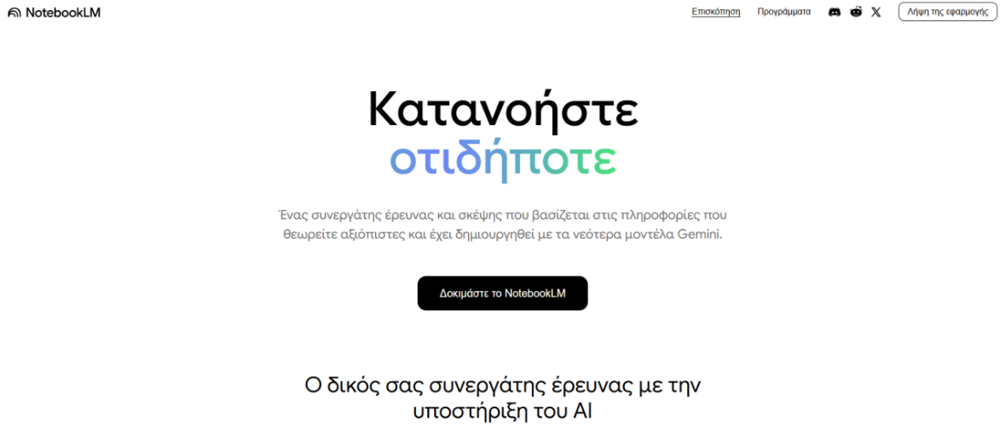
«Αρχική σελίδα του NotebookLM»Υποενότητα 1.3
Πρόσβαση και Σύνδεση — Βήμα 2
Έπειτα, πατώντας το κουμπί «Δοκιμάστε το NotebookLM», θα μεταβείτε μέσα στο περιβάλλον του εργαλείου.
Στην περίπτωση που ο browser σας δεν είναι συνδεδεμένος με το gmail σας, τότε θα σας ζητήσει να συνδεθείτε με τα στοιχεία σας.
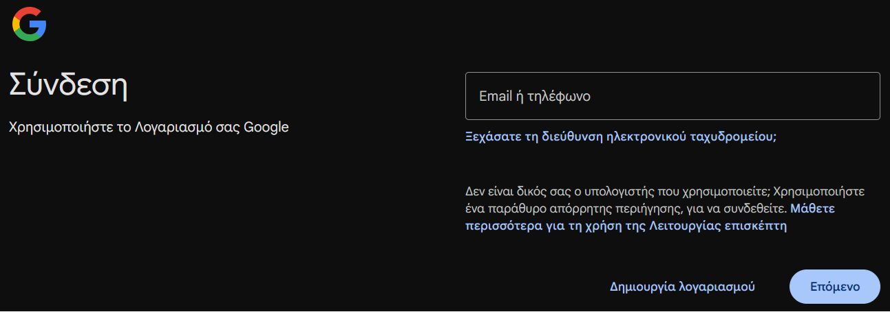
«Σύνδεση με τα στοιχεία του χρήστη»Υποενότητα 1.3
Η κεντρική σελίδα του NotebookLM
Διαφορετικά, θα μεταβείτε απευθείας στην κεντρική σελίδα του NotebookLM, όπως φαίνεται στην παρακάτω εικόνα.
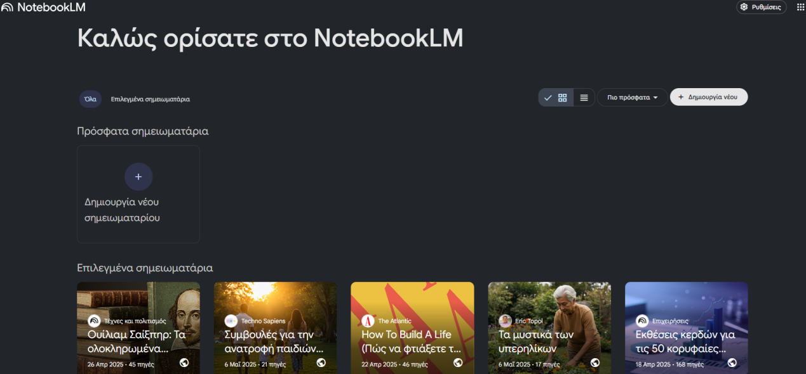
«Κεντρική σελίδα του NotebookLM με σημειωματάρια»
📌
Συνοψίζοντας: Η πρόσβαση στο NotebookLM είναι γρήγορη και γίνεται αποκλειστικά μέσω του Google λογαριασμού σας, όπως και στο Gemini. Μετά την πρώτη είσοδο, το NotebookLM δημιουργεί αυτόματα έναν χώρο εργασίας, στον οποίο μπορείτε να αποθηκεύσετε όλα τα σημειωματάριά σας.
Υποενότητα 1.4
Δημιουργία πρώτου Notebook — Βήμα 1
Αφού συνδεθείτε στο NotebookLM, μπορείτε να ξεκινήσετε αμέσως δημιουργώντας το πρώτο σας σημειωματάριο (Notebook). Κάθε σημειωματάριο λειτουργεί σαν προσωπικός χώρος μελέτης, όπου προσθέτετε τα δικά σας έγγραφα και πηγές.
Βήμα 1: Δημιουργία Notebook. Στην κεντρική οθόνη, δημιουργήστε ένα νέο σημειωματάριο. Υπάρχουν 2 τρόποι, όπως φαίνεται στην παρακάτω εικόνα.
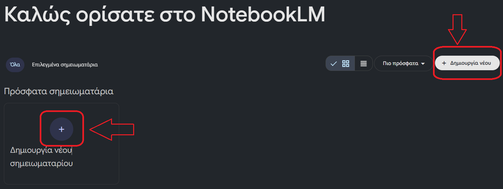
«Δημιουργία σημειωματάριου»Υποενότητα 1.4
Βήμα 2: Ονομασία του Notebook & Προσθήκη αρχείων
Πατώντας «Δημιουργία νέου σημειωματάριου», ανοίγει ένα νέο παράθυρο, όπως φαίνεται παρακάτω.
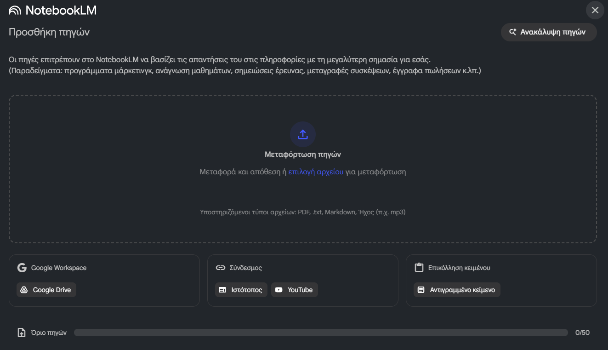
Αρχικά, στο κέντρο εμφανίζεται η επιλογή «Μεταφόρτωση πηγών». Πατώντας επάνω, μπορείτε να επιλέξετε τα αρχεία που έχετε αποθηκευμένα στον υπολογιστή σας, για να τα ανεβάσετε στο σημειωματάριο.
⚠️
Προσοχή: Σε αυτό το σημείο χρειάζεται να θυμάστε ότι δεν μπορείτε να ανεβάσετε οποιονδήποτε τύπο αρχείου θέλετε. Οι υποστηριζόμενοι τύποι αρχείων, όπως ήδη αναγράφεται, είναι: PDF, txt, Markdown, Ήχος (π.χ. mp3).
Υποενότητα 1.5
Προσθήκη και Διαχείριση αρχείων
Αφού λοιπόν ανοίξετε το παράθυρο και πατήσετε «Μεταφόρτωση πηγών», τώρα επιλέξτε τα αρχεία από τον υπολογιστή σας.
Μόλις επιλέξετε το αρχείο, το NotebookLM χρειάζεται λίγα δευτερόλεπτα για να το αναλύσει. Μόλις είναι έτοιμο, θα δείτε το όνομα του αρχείου να εμφανίζεται στη λίστα με τις πηγές στην αριστερή στήλη.
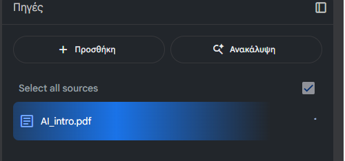
«Upload file»
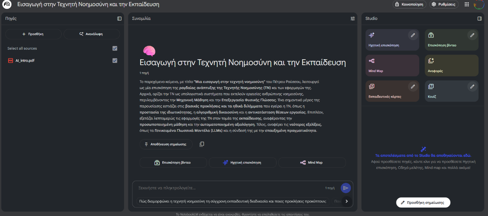
«Το περιβάλλον του NotebookLM»
ΑΝΑΛΥΤΙΚΗ ΥΠΟΕΝΟΤΗΤΑΕξήγηση · Παράδειγμα · Εφαρμογή
Συμπληρωματική υποενότητα · Υποενότητα 1.5
Βιβλιοθήκη πηγών με ημερομηνίες και εκδόσεις
Μαθησιακός στόχος: Να προετοιμάζετε υλικό που μπορεί να ελεγχθεί.
4 βήματα μελέτης · προσπάθησε πριν δεις την ανατροφοδότηση
Η τεκμηρίωση σε πηγές μειώνει ορισμένους κινδύνους ανακριβειών, αλλά δεν εγγυάται σωστή απάντηση. Αν το notebook περιέχει παλιά, ελλιπή ή αντιφατικά έγγραφα, αυτά επηρεάζουν τη σύνθεση. Η ποιότητα ξεκινά πριν από την πρώτη ερώτηση.
Πεδίο μητρώου
Παράδειγμα
Τίτλος και εκδότης
Οδηγός λειτουργίας · εκπαιδευτικός φορέας
Έκδοση και ημερομηνία
v2 · 08/09/2026
Σκοπός
Περιγραφή διαδικασίας, όχι απόδειξη αποτελεσματικότητας
Κατάσταση
Ενεργό / ιστορικό / προς επιβεβαίωση
Κρατάμε διαφορετικές εκδόσεις μόνο όταν θέλουμε να τις συγκρίνουμε, με σαφείς ετικέτες. Αν αναζητούμε τη σημερινή διαδικασία, επιλέγουμε την ισχύουσα πηγή. Για δυσανάγνωστο PDF ελέγχουμε ότι η εξαγωγή κειμένου αναγνωρίζει πίνακες, τόνους και αρίθμηση σελίδων.
Συνθετική εκπαιδευτική εικόνα, δημιουργημένη με AI. Δεν αποτελεί φωτογραφία πραγματικού συμβάντος ή στιγμιότυπο εφαρμογής.
Μικρή άσκηση
Έχετε οδηγούς του 2024 και του 2026 με διαφορετικές προθεσμίες. Ποιο είναι το πρώτο ερώτημα;
Δείτε ενδεικτική απάντηση και εξήγηση
Ποιος οδηγός ισχύει για την περίπτωσή μας; Ζητάμε σύγκριση εκδόσεων με παραπομπές και ελέγχουμε αν ο νεότερος αντικαθιστά τον προηγούμενο.
Η ποιότητα της βιβλιοθήκης καθορίζει τα όρια της σύνθεσης
Ένα μητρώο πηγών είναι σύντομος οργανωμένος κατάλογος που εξηγεί τι είναι κάθε τεκμήριο και γιατί χρησιμοποιείται. Χρήσιμα πεδία είναι τίτλος, δημιουργός, έκδοση, τύπος πηγής και σχέση με το ερευνητικό ερώτημα. Η ημερομηνία δημοσίευσης έχει νόημα όταν συνδέεται με το περιεχόμενο: μια παλιά θεωρητική εργασία μπορεί να παραμένει θεμελιώδης, ενώ μια παλιά οδηγία προϊόντος μπορεί να μην περιγράφει τη σημερινή λειτουργία.
Η νεότερη έκδοση δεν ταυτίζεται πάντα με την εγκεκριμένη έκδοση. Σε επαγγελματικό περιβάλλον μπορεί να υπάρχουν προσχέδια, τελικά αρχεία και προσωπικές διορθώσεις με παρόμοιο τίτλο. Αν τα εισαγάγουμε χωρίς διάκριση, η απάντηση μπορεί να συνδυάσει στοιχεία με διαφορετική ισχύ. Η σαφής ονομασία και η επιλογή κατάλληλων πηγών ανά ερώτημα περιορίζουν αυτή τη σύγχυση.
Πριν ζητήσουμε σύνθεση ελέγχουμε αν η εισαγωγή διατήρησε κρίσιμα στοιχεία. Πίνακες, υποσημειώσεις, σαρωμένο κείμενο και σύνθετη μορφοποίηση μπορεί να χρειάζονται ιδιαίτερη επιθεώρηση. Ένας απλός έλεγχος είναι να ζητήσουμε μεταγραφή ενός γνωστού αποσπάσματος και να τη συγκρίνουμε με το πρωτότυπο. Αν η ανάγνωση της πηγής είναι λανθασμένη, η διόρθωση πρέπει να γίνει πριν από την ερμηνεία.
Παράδειγμα: τρία αρχεία με παρόμοιο όνομα
Υποθετικό εκπαιδευτικό σενάριο
Στον φάκελο υπάρχουν «Πρόγραμμα_σχέδιο», «Πρόγραμμα_εγκεκριμένο» και «Πρόγραμμα_προσωπικές_σημειώσεις». Η ερώτηση αφορά τις επίσημες ώρες διδασκαλίας. Η πηγή που καθορίζει την απάντηση είναι το εγκεκριμένο πρόγραμμα, ενώ το σχέδιο χρησιμοποιείται μόνο αν ζητείται σύγκριση αλλαγών.
Στο μητρώο καταγράφεται ο ρόλος κάθε αρχείου. Η απάντηση πρέπει να αναφέρει την επιλεγμένη έκδοση, ώστε ένας δεύτερος αναγνώστης να μπορεί να αναπαραγάγει τον έλεγχο. Αυτό είναι ιδιαίτερα χρήσιμο όταν το υλικό επαναχρησιμοποιείται από διαφορετικούς εκπαιδευτές.
Ενδεικτική οδηγία
Κατέγραψε τίτλο, έκδοση, ρόλο και πιθανό περιορισμό κάθε πηγής. Για τις επίσημες ώρες χρησιμοποίησε μόνο το εγκεκριμένο πρόγραμμα. Αν υπάρχει διαφορά με άλλη πηγή, παρουσίασέ την χωριστά.
Εργαστήριο εφαρμογής
Σύνδεσε τον τύπο πηγής με τον κατάλληλο τρόπο χρήσης.
Μεταφορά στη δική σου πράξη
Ονόμασε τρεις πηγές που χρησιμοποιείς συχνά και γράψε τον διαφορετικό ρόλο που θα είχαν στο μητρώο σου.
Οι σημειώσεις παραμένουν σε αυτόν τον browser.
Κριτήρια αυτοαξιολόγησης
Έλεγξε αν η απάντησή σου συνδέεται με τη συγκεκριμένη έννοια, περιλαμβάνει ένα εφαρμόσιμο παράδειγμα και εξηγεί πώς θα ελέγξεις το αποτέλεσμα. Σύγκρινέ την με την αναλυτική εξήγηση και συζήτησε τυχόν αμφιβολία με τον εκπαιδευτή.
Υποενότητα 1.5
Προεπισκόπηση της πηγής
Τώρα, αφού έχετε ανεβάσει το αρχείο που θέλετε, πατήστε επάνω στο όνομά του. Ανοίγει η προεπισκόπηση της πηγής.
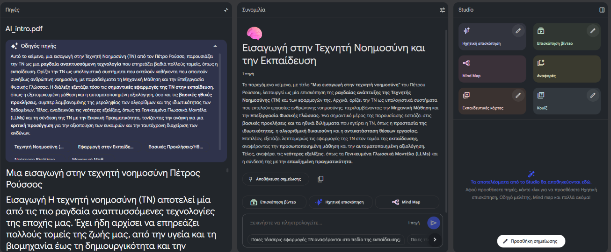
Πλέον, μπορείτε να κάνετε ερωτήσεις στο μοντέλο και να σας απαντά με βάση τις πληροφορίες του συγκεκριμένου αρχείου.
Υποενότητα 1.5
Επιλογή ορισμένων αρχείων προς μελέτη
⚠️
Προσοχή! Αν έχετε ανεβάσει πολλά αρχεία αλλά θέλετε το NotebookLM να χρησιμοποιεί μόνο ορισμένα από αυτά, μπορείτε να απο-επιλέξετε όποια δεν χρειάζεστε εκείνη τη στιγμή. Έτσι, το εργαλείο θα απαντά μόνο με βάση τα αρχεία που έχετε αφήσει επιλεγμένα.
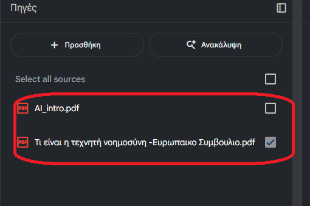
«Επιλογή ορισμένων αρχείων προς μελέτη»Υποενότητα 1.6
Ερωτήσεις σχετικά με τις πηγές
Αφού επιλέξετε ποια αρχεία θέλετε να μελετήσετε, μπορείτε να ξεκινήσετε τη συνομιλία με το NotebookLM. Το εργαλείο αναλύει το περιεχόμενο των πηγών και απαντά μόνο με βάση όσα περιλαμβάνονται στα επιλεγμένα αρχεία ή και σε όλα τα αρχεία που έχετε ανεβάσει.
Βήμα 1: Το πεδίο των ερωτήσεων. Στο κάτω μέρος της οθόνης εμφανίζεται ένα πλαίσιο κειμένου με την ένδειξη «Ξεκινήστε να πληκτρολογείτε…». Εδώ μπορείτε να γράψετε απλές ερωτήσεις, όπως:
✔ Παραδείγματα
«Ποια είναι τα βασικά σημεία του αρχείου;» «Δώσε μου μια σύντομη περίληψη.» «Τι αναφέρει το κείμενο για τα οφέλη της τεχνητής νοημοσύνης;»
Υποενότητα 1.6
Το πεδίο ερωτήσεων
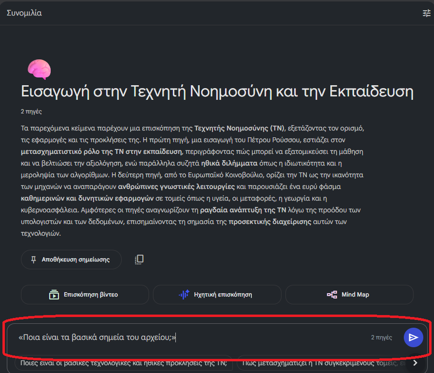
«Το πεδίο ερωτήσεων στο κάτω μέρος της οθόνης»
💡
Tip! Δίπλα στο πλαίσιο όπου γράφετε την ερώτησή σας, εμφανίζεται ένδειξη με τον αριθμό των πηγών που θα χρησιμοποιήσει το NotebookLM για να απαντήσει (π.χ. «2 πηγές»). Έτσι ξέρετε πάντα πόσες πηγές λαμβάνονται υπόψη στην απάντηση.
Υποενότητα 1.6
Βήμα 2: Λήψη απάντησης
Μόλις πατήσετε Enter, το NotebookLM εμφανίζει μια αναλυτική απάντηση στο πάνω μέρος της οθόνης, στη μεσαία στήλη.
Στο τέλος κάθε απάντησης μπορείτε να δείτε τις παραπομπές, οι οποίες δείχνουν από ποιο αρχείο και από ποιο σημείο του αρχείου προήλθε αυτή η πληροφορία.
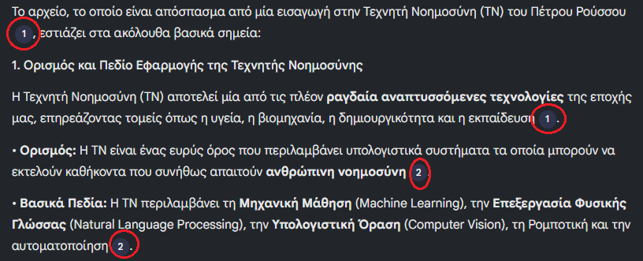
«Παραπομπές από τα αρχεία»
ΑΝΑΛΥΤΙΚΗ ΥΠΟΕΝΟΤΗΤΑΕξήγηση · Παράδειγμα · Εφαρμογή
Συμπληρωματική υποενότητα · Υποενότητα 1.6
Παραπομπή, συμπέρασμα και άγνωστο στοιχείο
Μαθησιακός στόχος: Να ξεχωρίζετε τι λέει η πηγή από την ερμηνεία του AI.
4 βήματα μελέτης · προσπάθησε πριν δεις την ανατροφοδότηση
Μια παραπομπή πρέπει να οδηγεί στο απόσπασμα που στηρίζει τη συγκεκριμένη πρόταση. Δεν αρκεί να αφορά γενικά το ίδιο θέμα. Διαβάζουμε το συμφραζόμενο και ελέγχουμε μήπως το AI παρέλειψε προϋπόθεση, εξαίρεση ή αρνητική διατύπωση.
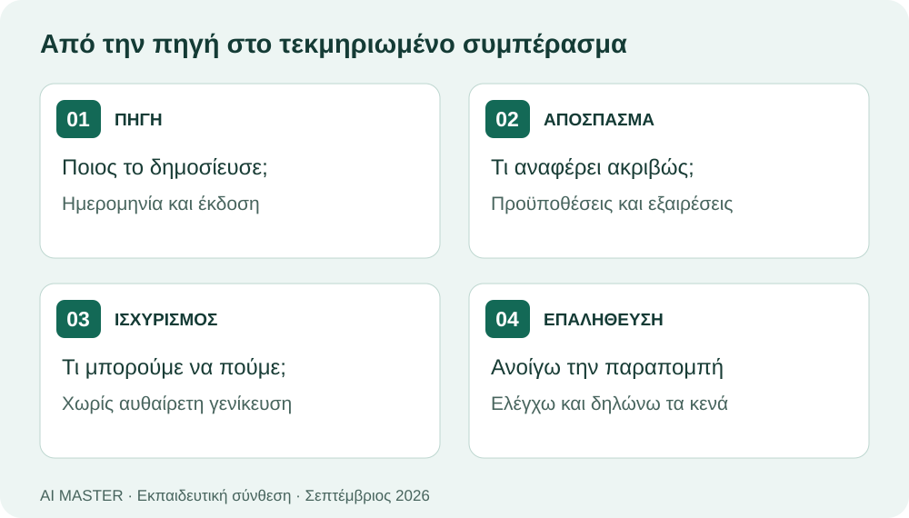
Πρωτότυπο εκπαιδευτικό διάγραμμα · 2026. Η εξήγηση αποδίδεται και στο κείμενο.
Δοκιμάστε αυτό το prompt
Χρησιμοποίησε μόνο τις επιλεγμένες πηγές. Για κάθε απάντηση δώσε: τι αναφέρεται ρητά, ποια παραπομπή το στηρίζει και τι παραμένει άγνωστο. Αν προτείνεις συμπέρασμα, χαρακτήρισέ το ως ερμηνεία. Μην επινοείς αριθμούς ή ονόματα.
Μικρή άσκηση
Η πηγή λέει «δοκιμάστηκε σε 20 άτομα». Η απάντηση γράφει «αποδεδειγμένα αποτελεσματικό για όλους». Στηρίζεται ο ισχυρισμός;
Δείτε ενδεικτική απάντηση και εξήγηση
Όχι. Η γενίκευση υπερβαίνει το διαθέσιμο τεκμήριο. Χρειάζεται περιγραφή της δοκιμής, του δείγματος και των περιορισμών. Η παραπομπή δεν κάνει τη γενίκευση έγκυρη.
Πώς μεταφέρεται ένας ισχυρισμός χωρίς να αλλάζει το νόημά του
Η τεκμηριωμένη γραφή διαχωρίζει το απόσπασμα της πηγής, την παράφρασή του και το συμπέρασμα του αναγνώστη. Η παράφραση αλλάζει τις λέξεις, αλλά πρέπει να διατηρεί το νόημα, τον πληθυσμό αναφοράς και το επίπεδο βεβαιότητας. Αν η πηγή γράφει «ενδέχεται», η σύνοψη δεν πρέπει να γράφει «αποδεικνύει». Μικρές γλωσσικές μετατοπίσεις μπορούν να δημιουργήσουν πολύ μεγαλύτερο ισχυρισμό από αυτόν που τεκμηριώνεται.
Ελέγχουμε την παραπομπή με τρεις ερωτήσεις: αφορά το ίδιο πράγμα, στηρίζει ολόκληρη την πρόταση και περιλαμβάνει κάποια επιφύλαξη που παραλείφθηκε; Η παρουσία ενός αριθμού παραπομπής δίπλα σε μια πρόταση δεν αρκεί. Μπορεί η πηγή να στηρίζει μόνο την πρώτη από δύο επιμέρους διατυπώσεις. Για αυτό οι σύνθετοι ισχυρισμοί είναι συχνά καλύτερο να διασπώνται σε μικρότερα ελέγξιμα μέρη.
Το άγνωστο στοιχείο πρέπει να παραμένει άγνωστο μέχρι να βρεθεί κατάλληλο τεκμήριο. Η συμπλήρωση κενού με μια εύλογη υπόθεση μπορεί να κάνει το κείμενο πιο ομαλό, αλλά μειώνει τη διαφάνειά του. Αν χρειάζεται πρόταση για δράση, τη διατυπώνουμε ως δική μας εισήγηση και εξηγούμε σε ποια δεδομένα στηρίζεται. Η τεκμηρίωση δεν απαγορεύει την ερμηνεία· απαιτεί να είναι αναγνωρίσιμη ως ερμηνεία.
Παράδειγμα: αυτοπεποίθηση και πραγματική επίδοση
Υποθετικό εκπαιδευτικό σενάριο
Η πηγή αναφέρει ότι 40 συμμετέχοντες δήλωσαν μεγαλύτερη αυτοπεποίθηση μετά την επιμόρφωση. Η σύνοψη γράφει ότι «η επιμόρφωση αύξησε τις δεξιότητες όλων των εργαζομένων». Η διατύπωση αλλάζει τη μέτρηση, γενικεύει τον πληθυσμό και προσθέτει αιτιώδη βεβαιότητα.
Μια πιστή εκδοχή είναι: «Οι συμμετέχοντες ανέφεραν μεγαλύτερη αυτοπεποίθηση. Από το συγκεκριμένο απόσπασμα δεν προκύπτει αντικειμενική μέτρηση δεξιοτήτων». Οι αριθμοί και το σενάριο είναι υποθετικά και χρησιμοποιούνται για να φανεί ο τρόπος ελέγχου.
Ενδεικτική οδηγία
Διάκρινε ρητά τι αναφέρει η πηγή και τι προτείνουμε εμείς. Διατήρησε τον πληθυσμό και τις επιφυλάξεις. Για κάθε νέο συμπέρασμα δήλωσε αν είναι τεκμηριωμένο ή αποτελεί υπόθεση.
Εργαστήριο εφαρμογής
Ποια φράση είναι πιστή στο υποθετικό εύρημα;
Μεταφορά στη δική σου πράξη
Γράψε μια πρόταση που διαχωρίζει ένα εύρημα από μια πρόταση εφαρμογής του, χρησιμοποιώντας τις φράσεις «η πηγή αναφέρει» και «προτείνουμε».
Οι σημειώσεις παραμένουν σε αυτόν τον browser.
Κριτήρια αυτοαξιολόγησης
Έλεγξε αν η απάντησή σου συνδέεται με τη συγκεκριμένη έννοια, περιλαμβάνει ένα εφαρμόσιμο παράδειγμα και εξηγεί πώς θα ελέγξεις το αποτέλεσμα. Σύγκρινέ την με την αναλυτική εξήγηση και συζήτησε τυχόν αμφιβολία με τον εκπαιδευτή.
Υποενότητα 1.7
Αποθήκευση σημειώσεων
Κατά τη διάρκεια της συνομιλίας σας με το NotebookLM, μπορείτε εύκολα να αποθηκεύσετε σημαντικά σημεία ή απαντήσεις που σας έδωσε. Στο τέλος κάθε απάντησης παρουσιάζεται μια επιλογή «Αποθήκευση σημείωσης». Πατώντας το, αυτές οι πληροφορίες θα αποθηκευτούν στη δεξιά (3η) στήλη.
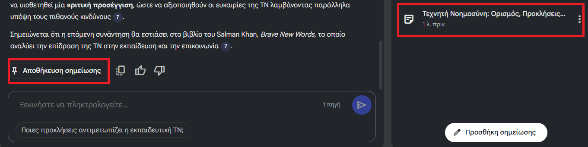
«Αποθήκευση σημείωσης»
💡
Συμβουλή: Μπορείτε να οργανώνετε τις σημειώσεις σας ανά θέμα ή ερώτηση, έτσι ώστε να δημιουργήσετε στο τέλος έναν ολοκληρωμένο οδηγό μελέτης.
Υποενότητα 1.7
Αυτόματες ερωτήσεις
Κάτω από το πεδίο της ερώτησης (prompt), το NotebookLM προτείνει ερωτήσεις σχετικές με το θέμα που μόλις συζητήθηκε. Αυτές δημιουργούνται αυτόματα από το μοντέλο και λειτουργούν σαν ιδέες για περαιτέρω διερεύνηση.
Η ενότητα Studio του NotebookLM σας επιτρέπει να μετατρέπετε το υλικό σας σε διαφορετικά είδη περιεχομένου, όπως «Ηχητική Επισκόπηση», «Επισκόπηση Βίντεο», «Mind Map», «Αναφορές», «Εκπαιδευτικές κάρτες», «Κουίζ». Με αυτόν τον τρόπο, ο χρήστης μπορεί να αξιοποιεί το ίδιο γνωστικό υλικό σε ποικίλες μορφές, είτε για μελέτη, είτε για παρουσίαση, είτε για εκπαιδευτικούς σκοπούς.
Το σημαντικό είναι ότι ο χρήστης δεν χρειάζεται να κάνει καμία επιπλέον ενέργεια ή να δώσει εντολές. Αρκεί απλώς να πατήσει επάνω στη λειτουργία που τον ενδιαφέρει, και το NotebookLM ξεκινά αυτόματα να δημιουργεί το αντίστοιχο περιεχόμενο (π.χ. περίληψη, βίντεο, κάρτες ή κουίζ) βασισμένο στις πηγές του.
⏳
Σημείωση: Η δημιουργία των εργαλείων του Studio διαρκεί κάποια λεπτά.
ΑΝΑΛΥΤΙΚΗ ΥΠΟΕΝΟΤΗΤΑΕξήγηση · Παράδειγμα · Εφαρμογή
Συμπληρωματική υποενότητα · Υποενότητα 2.1
Από τη σύνοψη σε επεξεργάσιμα παραδοτέα
Μαθησιακός στόχος: Να επιλέγετε κατάλληλη μορφή εξόδου για τον σκοπό σας.
4 βήματα μελέτης · προσπάθησε πριν δεις την ανατροφοδότηση
Η αναβάθμιση που περιγράφει η Google το 2026 προσθέτει εκτέλεση κώδικα σε ασφαλή υπολογιστή cloud και περισσότερα παραδοτέα από τις πηγές: έγγραφα, υπολογιστικά φύλλα, παρουσιάσεις, γραφήματα και δομημένα δεδομένα. Η διάθεση ξεκίνησε σε συγκεκριμένα προγράμματα και επεκτείνεται· ελέγχουμε ποιες λειτουργίες υπάρχουν στον λογαριασμό μας.
Στόχος
Κατάλληλο παραδοτέο
Έλεγχος
Να ενημερωθεί η ομάδα
Σύντομο έγγραφο
Κάθε συμπέρασμα να έχει πηγή
Να επανελεγχθούν αριθμοί
Υπολογιστικό φύλλο
Μονάδες, τύποι, συνολικά μεγέθη
Να παρουσιαστεί μια ιδέα
Διαφάνειες
Ένα βασικό μήνυμα ανά διαφάνεια
Να ανταλλαχθούν δεδομένα
CSV ή JSON
Σωστά πεδία και κενές τιμές
Εκπαιδευτική πρακτική: ζητάμε πρώτα μικρό δείγμα και επιβεβαιώνουμε τη δομή. Έπειτα δημιουργούμε το πλήρες αρχείο. Ανοίγουμε την εξαγωγή στην εφαρμογή προορισμού, επειδή η καλή εμφάνιση στην προεπισκόπηση δεν εγγυάται ίδια μορφοποίηση παντού.
Μικρή άσκηση
Γιατί να ζητήσουμε φύλλο εργασίας μαζί με PDF αναφοράς;
Δείτε ενδεικτική απάντηση και εξήγηση
Το PDF διευκολύνει την ανάγνωση, ενώ το υπολογιστικό φύλλο επιτρέπει έλεγχο και επανάχρηση των δεδομένων. Τα δύο εξυπηρετούν διαφορετικούς σκοπούς.
Το ίδιο περιεχόμενο χρειάζεται διαφορετικό σχεδιασμό σε κάθε μορφή
Η μετατροπή πηγών σε σύνοψη, παρουσίαση, πίνακα ή οπτικό υλικό δεν είναι απλή αλλαγή αρχείου. Κάθε μορφή εξυπηρετεί διαφορετική χρήση. Μια αναφορά χρειάζεται συνεκτική ανάπτυξη και τεκμηρίωση, μια παρουσίαση επιλέγει τα βασικά για ζωντανή εξήγηση και ένας πίνακας οργανώνει συγκρίσιμα πεδία. Αν μεταφέρουμε το ίδιο μεγάλο κείμενο παντού, το αποτέλεσμα μπορεί να είναι τεχνικά σωστό αλλά πρακτικά δύσχρηστο.
Η επιλογή μορφής πρέπει να ακολουθεί τον στόχο του αναγνώστη. Για γρήγορη ενημέρωση μπορεί να αρκεί σύντομο σημείωμα με εύρημα, περιορισμό και επόμενο βήμα. Για μελέτη χρειάζεται περισσότερη εξήγηση και δυνατότητα επιστροφής στις πηγές. Οι νεότερες δυνατότητες παραγωγής αρχείων διευρύνουν τις επιλογές, αλλά η διαθεσιμότητα εξαρτάται από το συγκεκριμένο περιβάλλον και το πρόγραμμα πρόσβασης.
Μετά την παραγωγή ελέγχουμε τη μεταφορά της πληροφορίας. Διατηρήθηκαν οι κρίσιμοι αριθμοί; Συνδέονται οι παραπομπές με τα σωστά σημεία; Μήπως μια σύντομη διαφάνεια αφαίρεσε την επιφύλαξη που υπήρχε στην αναφορά; Ο έλεγχος αφορά και τη λειτουργία του αρχείου: άνοιγμα, αναγνωσιμότητα, μορφοποίηση και δυνατότητα επεξεργασίας. Η παραγωγή ενός αρχείου δεν αποτελεί από μόνη της παραλαβή ολοκληρωμένου έργου.
Παράδειγμα: από αναφορά σε εκπαιδευτική παρουσίαση
Υποθετικό εκπαιδευτικό σενάριο
Η πηγή περιλαμβάνει ένα εύρημα με δύο περιορισμούς. Για τη μονοσέλιδη αναφορά οι περιορισμοί εξηγούνται σε παράγραφο. Για την παρουσίαση εμφανίζονται συνοπτικά κοντά στο εύρημα και αναπτύσσονται από τον εκπαιδευτή. Δεν αφαιρούνται απλώς για να χωρέσει περισσότερο κείμενο.
Πριν παραδοθεί το υλικό, η ομάδα συγκρίνει έναν βασικό ισχυρισμό σε όλες τις μορφές. Αν το νόημα έχει μετατοπιστεί, διορθώνει τη μεταφορά και όχι μόνο την εμφάνιση. Αυτός ο έλεγχος βοηθά να παραμείνει ενιαία η εκπαιδευτική γραμμή.
Ενδεικτική οδηγία
Μετέτρεψε τις πηγές σε σύντομη αναφορά και σχέδιο παρουσίασης. Διατήρησε το κύριο εύρημα και τους περιορισμούς και στις δύο μορφές. Εξήγησε πώς προσαρμόστηκε η έκταση χωρίς αλλαγή νοήματος.
Εργαστήριο εφαρμογής
Διάλεξε τον βασικό σχεδιαστικό στόχο κάθε παραδοτέου.
Μεταφορά στη δική σου πράξη
Περιέγραψε πώς θα άλλαζες την παρουσίαση της ίδιας πληροφορίας για έναν αναγνώστη αναφοράς και για ένα ακροατήριο.
Οι σημειώσεις παραμένουν σε αυτόν τον browser.
Κριτήρια αυτοαξιολόγησης
Έλεγξε αν η απάντησή σου συνδέεται με τη συγκεκριμένη έννοια, περιλαμβάνει ένα εφαρμόσιμο παράδειγμα και εξηγεί πώς θα ελέγξεις το αποτέλεσμα. Σύγκρινέ την με την αναλυτική εξήγηση και συζήτησε τυχόν αμφιβολία με τον εκπαιδευτή.
Υποενότητα 2.1
Το περιβάλλον του Studio
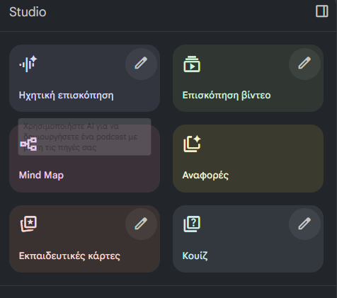
«Studio»Υποενότητα 2.2
Ηχητική Επισκόπηση
Η λειτουργία Ηχητική Επισκόπηση μετατρέπει το περιεχόμενο των πηγών σας σε αφήγηση.
Έτσι, μπορείτε να ακούσετε μια σύνοψη του θέματος αντί να τη διαβάσετε — ιδανικό για επανάληψη ή γρήγορη ενημέρωση.
🎧
Ιδανική λύση όταν θέλετε να «μελετήσετε» εν κινήσει, ακούγοντας το υλικό σας σαν αφήγηση.
Υποενότητα 2.3
Επισκόπηση Βίντεο
Η επιλογή Επισκόπηση Βίντεο δημιουργεί μια σύντομη παρουσίαση του περιεχομένου σας σε μορφή βίντεο, με υποστηρικτικό κείμενο ή αφήγηση.
Είναι χρήσιμη για παρουσιάσεις ή εκπαιδευτικό υλικό σε τάξεις και σεμινάρια.
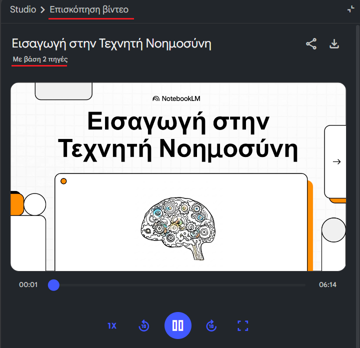
«Εικόνα από το video που δημιούργησε το NotebookLM»Υποενότητα 2.4
Mind Map (Χάρτης Σκέψης)
Το Mind Map (Χάρτης Σκέψης) παρουσιάζει τις βασικές έννοιες του υλικού σας οπτικά, σε μορφή διαγράμματος. Σας βοηθά να κατανοήσετε γρήγορα τη δομή και τη σχέση ανάμεσα στις ιδέες.
Η επιλογή Κουίζ μετατρέπει το περιεχόμενο των πηγών σας σε μικρά τεστ γνώσης. Το NotebookLM δημιουργεί ερωτήσεις πολλαπλής επιλογής ή ανοιχτού τύπου, ώστε να ελέγχετε τι έχετε κατανοήσει.
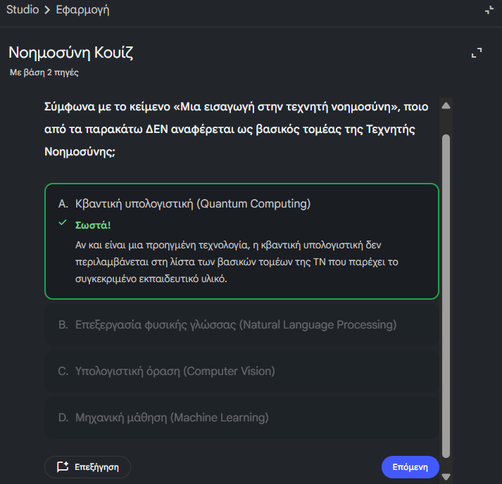
ΑΝΑΛΥΤΙΚΗ ΥΠΟΕΝΟΤΗΤΑΕξήγηση · Παράδειγμα · Εφαρμογή
Συμπληρωματική υποενότητα · Υποενότητα 2.5
Κουίζ και κάρτες με στόχο την κατανόηση
Μαθησιακός στόχος: Να μετατρέπετε τις δημιουργίες του Studio σε σχέδιο μελέτης.
4 βήματα μελέτης · προσπάθησε πριν δεις την ανατροφοδότηση
Στην αρχική ενότητα γνωρίσαμε κουίζ και εκπαιδευτικές κάρτες. Εδώ τα εντάσσουμε σε μικρή διδακτική διαδικασία: πρώτα ανάκληση χωρίς βοήθεια, μετά ανατροφοδότηση με πηγή και τέλος εφαρμογή σε νέο παράδειγμα. Η διαδικασία αποτελεί πρόταση του μαθήματος, όχι μέτρηση αποτελεσματικότητας του προϊόντος.
Επιλέξτε μικρό, συνεκτικό σύνολο πηγών.
Ζητήστε ερωτήσεις που απαιτούν επιλογή ή εξήγηση, όχι μόνο αναγνώριση ορισμών.
Ελέγξτε ότι η σωστή απάντηση τεκμηριώνεται και οι λανθασμένες επιλογές δεν είναι αμφίσημες.
Καταγράψτε τι δυσκόλεψε τους εκπαιδευομένους και επιστρέψτε στο σχετικό απόσπασμα.
Δοκιμάστε αυτό το prompt
Με βάση το επιλεγμένο υλικό, σχεδίασε πέντε ερωτήσεις εφαρμογής. Για καθεμία δώσε στόχο, σωστή απάντηση, εξήγηση και πηγή. Μην εξετάσεις στοιχεία που δεν διδάσκονται. Πρόσθεσε μία ερώτηση στην οποία η σωστή στάση είναι να ζητήσουμε περισσότερες πληροφορίες.
Μικρή άσκηση
Μια ερώτηση έχει δύο σωστές απαντήσεις αλλά επιτρέπει μόνο μία επιλογή. Τι κάνουμε;
Δείτε ενδεικτική απάντηση και εξήγηση
Την αναδιατυπώνουμε ή τη μετατρέπουμε σε πολλαπλής επιλογής με σαφείς οδηγίες. Το αυτόματα παραγόμενο κουίζ χρειάζεται έλεγχο πριν χρησιμοποιηθεί για αξιολόγηση.
Ανάκληση, ανατροφοδότηση και εφαρμογή σε νέο παράδειγμα
Οι κάρτες και τα quizzes αποκτούν εκπαιδευτική αξία όταν απαιτούν πραγματική προσπάθεια ανάκλησης. Αν η απάντηση είναι ήδη ορατή ή προκύπτει από επιφανειακό στοιχείο της διατύπωσης, η δραστηριότητα μπορεί να ελέγχει αναγνώριση αντί κατανόησης. Ζητάμε από τον εκπαιδευόμενο να απαντήσει πριν δει τη λύση και να εξηγήσει σύντομα την επιλογή του. Η δυσκολία προσαρμόζεται στο επίπεδο και στις ανάγκες του.
Μια καλή ερώτηση έχει σαφή στόχο και αποφεύγει αμφισημίες. Στην πολλαπλή επιλογή οι λανθασμένες απαντήσεις πρέπει να αντιστοιχούν σε εύλογες παρανοήσεις. Αν μία επιλογή είναι εμφανώς άσχετη, η επιτυχία μπορεί να οφείλεται στον αποκλεισμό της και όχι στη γνώση. Ο εκπαιδευτής εξετάζει αν υπάρχει μία καλύτερη απάντηση και αν η αιτιολόγηση στηρίζεται πράγματι στο διδαγμένο υλικό.
Ο κύκλος μελέτης συνεχίζεται μετά τη διόρθωση. Ο εκπαιδευόμενος εντοπίζει τι τον μπέρδεψε, επιστρέφει στην πηγή και δοκιμάζει νέο παράδειγμα. Η επανάληψη σε μεταγενέστερο χρόνο μπορεί να χρησιμοποιηθεί για να ελεγχθεί η διατήρηση της γνώσης. Δεν μετατρέπουμε μια μικρή άσκηση αυτοελέγχου σε απόδειξη γενικής επάρκειας: διαφορετικοί στόχοι χρειάζονται διαφορετικές εργασίες και επαρκή τεκμήρια επίδοσης.
Παράδειγμα: από την κάρτα ορισμού στην εφαρμογή
Υποθετικό εκπαιδευτικό σενάριο
Μια κάρτα ρωτά «τι είναι παρονομαστής;». Η σωστή απάντηση δείχνει γνώση του όρου, αλλά όχι απαραίτητα σωστή χρήση. Η επόμενη ερώτηση δίνει δύο ομάδες διαφορετικού μεγέθους και ζητά να υπολογιστεί ποια έχει μεγαλύτερη αναλογία ολοκληρώσεων.
Αν ο εκπαιδευόμενος επιλέξει μόνο το μεγαλύτερο πλήθος, η ανατροφοδότηση επιστρέφει στη σχέση αριθμητή και παρονομαστή. Έπειτα δίνεται νέο ζεύγος αριθμών για να ελεγχθεί αν η έννοια εφαρμόζεται πέρα από το αρχικό παράδειγμα.
Ενδεικτική οδηγία
Δημιούργησε μία ερώτηση ορισμού, μία σύγκρισης και μία εφαρμογής από τις πηγές. Κράτησε τις λύσεις χωριστά. Για κάθε λανθασμένη επιλογή εξήγησε την πιθανή παρανόηση.
Εργαστήριο εφαρμογής
Οργάνωσε έναν κύκλο ενεργής μελέτης.
Μετακίνησε τα βήματα με τα κουμπιά ↑ και ↓. Το πρώτο βήμα πρέπει να βρίσκεται επάνω.
Μελετώ την έννοια και την πηγή
Εφαρμόζω τον κανόνα σε νέο παράδειγμα
Ελέγχω την αιτιολόγηση και διορθώνω
Απαντώ χωρίς να βλέπω τη λύση
Μεταφορά στη δική σου πράξη
Μετέτρεψε μια ερώτηση απλής απομνημόνευσης του αντικειμένου σου σε ερώτηση εφαρμογής με σύντομο σενάριο.
Οι σημειώσεις παραμένουν σε αυτόν τον browser.
Κριτήρια αυτοαξιολόγησης
Έλεγξε αν η απάντησή σου συνδέεται με τη συγκεκριμένη έννοια, περιλαμβάνει ένα εφαρμόσιμο παράδειγμα και εξηγεί πώς θα ελέγξεις το αποτέλεσμα. Σύγκρινέ την με την αναλυτική εξήγηση και συζήτησε τυχόν αμφιβολία με τον εκπαιδευτή.
Υποενότητα 2.5
Το κουμπί «Επεξήγηση»
Όπως φαίνεται στην εικόνα, στο τέλος της ερώτησης υπάρχει ένα κουμπί «Επεξήγηση». Πατώντας το, στο κεντρικό (μεσαίο) παράθυρο το NotebookLM θα σας εξηγήσει περισσότερα σχετικά με τη σωστή ή τη λάθος απάντηση που δώσατε.
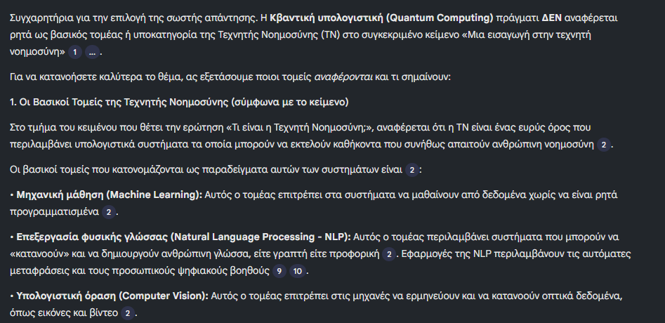
«Επεξήγηση στην ερώτηση του κουίζ»Υποενότητα 2.6
Εκπαιδευτικές Κάρτες (Flashcards)
Οι Εκπαιδευτικές Κάρτες (Flashcards) δημιουργούνται αυτόματα από τις σημειώσεις και τα βασικά σημεία των πηγών. Κάθε κάρτα περιέχει μια ερώτηση και μια απάντηση, βοηθώντας σας να επαναλάβετε το υλικό σας με διαδραστικό τρόπο. Για να δείτε την απάντηση, θα πρέπει να πατήσετε επάνω στην κάρτα και τότε εμφανίζεται το πίσω μέρος με την απάντηση.
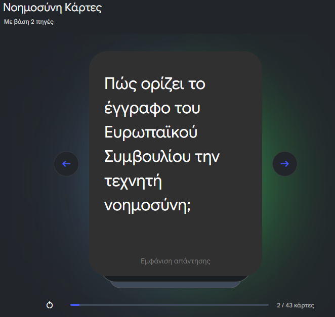
«Ερώτηση κάρτας»
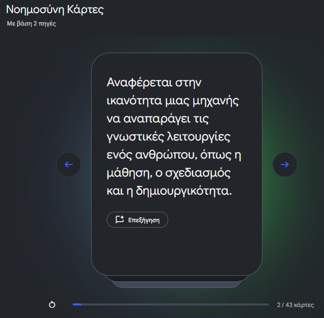
«Απάντηση της κάρτας»
Υποενότητα 2.7
Αναφορές
Η λειτουργία Αναφορές επιτρέπει στο NotebookLM να δημιουργεί αυτόματα διαφορετικά είδη κειμένων βασισμένα στις πηγές που έχετε προσθέσει.
Μπορείτε να επιλέξετε ανάμεσα σε διάφορες μορφές, ανάλογα με τον σκοπό σας — για παράδειγμα, Οδηγό Μελέτης, Ενημερωτικό Δελτίο, Ανάρτηση Ιστολογίου ή Λευκή Βίβλο.
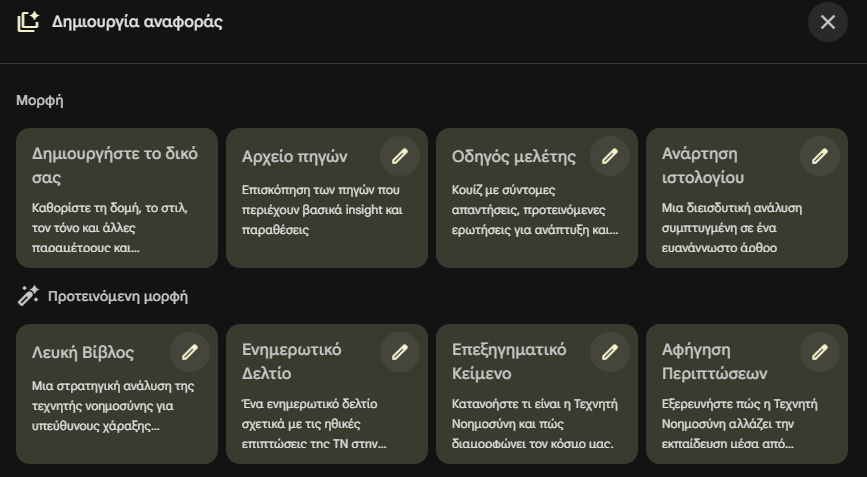
«Αναφορές»Υποενότητα 2.7
Τι προσφέρει κάθε μορφή
Πλήρως προσαρμόσιμη αναφορά, όπου ορίζετε εσείς τη δομή και το ύφος.
Σύντομη παρουσίαση όλων των εγγράφων που έχετε χρησιμοποιήσει, με αποσπάσματα και παραπομπές.
Αυτόματη περίληψη με ερωτήσεις και προτεινόμενες θεματικές για επανάληψη.
Κείμενο σε πιο αφηγηματικό ύφος, ιδανικό για άρθρα ή παρουσιάσεις.
Εκτενής, αναλυτική αναφορά για προχωρημένους χρήστες ή ερευνητικές εργασίες.
Συνοπτική παρουσίαση νέων ή τάσεων από τις πηγές σας.
Κείμενο που αναλύει έννοιες με απλό και κατανοητό τρόπο.
Παρουσίαση ενός θέματος μέσα από πραγματικά ή υποθετικά παραδείγματα.
ΑΝΑΛΥΤΙΚΗ ΥΠΟΕΝΟΤΗΤΑΕξήγηση · Παράδειγμα · Εφαρμογή
Συμπληρωματική υποενότητα · Υποενότητα 2.7
Εργαστήριο: τρεις πηγές, ένα ελέγξιμο ενημερωτικό
Μαθησιακός στόχος: Να ολοκληρώνετε μια μικρή εργασία με ίχνος τεκμηρίωσης.
4 βήματα μελέτης · προσπάθησε πριν δεις την ανατροφοδότηση
Σενάριο: ετοιμάζετε ενημερωτικό για συναδέλφους σχετικά με τη χρήση AI σε ένα εκπαιδευτικό πρόγραμμα. Χρησιμοποιείτε μία επίσημη ανακοίνωση δυνατότητας, έναν εσωτερικό οδηγό με συνθετικά στοιχεία και ένα σύντομο ερωτηματολόγιο εξάσκησης. Δεν ανεβάζετε προσωπικά δεδομένα εκπαιδευομένων.
Δώστε σε κάθε πηγή τίτλο, ημερομηνία και ρόλο.
Ζητήστε πίνακα «τι γνωρίζουμε / τι δεν γνωρίζουμε».
Επιλέξτε μία πρόταση βελτίωσης που στηρίζεται στις πηγές.
Δημιουργήστε ενημερωτικό μίας σελίδας και τρεις ερωτήσεις συζήτησης.
Ανοίξτε τις παραπομπές και ελέγξτε αν η πρόταση παραμένει σωστή χωρίς υποθέσεις που δεν δηλώθηκαν.
Δοκιμάστε αυτό το prompt
Ετοίμασε ενημερωτικό 300 λέξεων. Χώρισε τα επιβεβαιωμένα στοιχεία, τα κενά και τις δικές μας προτάσεις. Μην παρουσιάσεις την ανακοίνωση ενός κατασκευαστή ως ανεξάρτητη απόδειξη μαθησιακού οφέλους. Πρόσθεσε πηγές και ημερομηνία ελέγχου.
Μικρή άσκηση
Πότε θεωρείται ολοκληρωμένη η εργασία;
Δείτε ενδεικτική απάντηση και εξήγηση
Όταν το αρχείο ανοίγει, οι κρίσιμοι ισχυρισμοί έχουν ελεγχθεί, τα άγνωστα στοιχεία είναι ορατά και ένας συνάδελφος μπορεί να επαναλάβει τον έλεγχο. Η καλαίσθητη μορφή είναι ένα μόνο μέρος της ποιότητας.
Η σύνθεση χρειάζεται διαδρομή που μπορεί να ελέγξει τρίτος αναγνώστης
Ένα ελέγξιμο ενημερωτικό πρέπει να παρουσιάζει το ερώτημα, τα κύρια ευρήματα, τους περιορισμούς και τη βάση των προτεινόμενων ενεργειών. Δεν χρειάζεται να περιλαμβάνει κάθε λεπτομέρεια των πηγών, αλλά πρέπει να επιτρέπει στον αναγνώστη να εντοπίσει από πού προήλθαν οι κρίσιμοι ισχυρισμοί. Η συντομία επιτυγχάνεται με επιλογή ουσιωδών σημείων και όχι με αφαίρεση απαραίτητων επιφυλάξεων.
Σε εργασία με πολλές πηγές ξεκινάμε από πίνακα σύγκρισης. Καταγράφουμε το ερώτημα κάθε πηγής, το πλαίσιο, το εύρημα και τυχόν διαφωνία με τις υπόλοιπες. Αν χρησιμοποιούν διαφορετικούς ορισμούς, δεν συνδυάζουμε απευθείας τα αποτελέσματα. Η σύγκριση προηγείται της σύνθεσης, γιατί διαφορετικά μπορεί να κατασκευαστεί μία ομαλή αφήγηση που κρύβει ουσιαστικές ασυμβατότητες.
Η ομαδική εργασία γίνεται πιο αποτελεσματική όταν οι ρόλοι ελέγχου είναι σαφείς. Ένα άτομο μπορεί να ελέγχει την αντιστοίχιση πηγών, άλλο τους αριθμούς και άλλο τη σαφήνεια του παραδοτέου. Οι ρόλοι δεν καταργούν την κοινή ευθύνη για το τελικό κείμενο. Πριν από την παράδοση, η ομάδα εξετάζει αν τα συμπεράσματα απαντούν στο αρχικό ερώτημα και αν οι προτάσεις δηλώνονται ως προτάσεις.
Παράδειγμα: τρεις πηγές για ένα πρόγραμμα επιμόρφωσης
Υποθετικό εκπαιδευτικό σενάριο
Η πρώτη πηγή περιγράφει το πρόγραμμα, η δεύτερη περιέχει ανώνυμα αποτελέσματα και η τρίτη είναι ερευνητική μελέτη για σχετική μέθοδο. Η περιγραφή δεν αποδεικνύει αποτελεσματικότητα, ενώ τα αποτελέσματα του συγκεκριμένου προγράμματος δεν τεκμηριώνουν αυτόματα γενική εφαρμογή της μεθόδου.
Το ενημερωτικό παρουσιάζει τι έγινε, τι μετρήθηκε και τι μπορεί εύλογα να προταθεί ως επόμενο βήμα. Αν δεν υπάρχουν δεδομένα μακροχρόνιας επίδοσης, το σημειώνει και προτείνει κατάλληλη επόμενη μέτρηση αντί να δηλώνει ότι το ζήτημα έχει λυθεί.
Ενδεικτική οδηγία
Σύνταξε ενημερωτικό με ερώτημα, ευρήματα, περιορισμούς και επόμενα βήματα. Σύνδεσε τους ισχυρισμούς με τις πηγές και διαχώρισε τις προτάσεις της ομάδας από τα ερευνητικά συμπεράσματα.
Εργαστήριο εφαρμογής
Ποια διατύπωση σέβεται τα όρια του υποθετικού υλικού;
Μεταφορά στη δική σου πράξη
Γράψε μια πρόταση συμπεράσματος και μια πρόταση επόμενου βήματος για το δικό σου μικρό ερευνητικό έργο.
Οι σημειώσεις παραμένουν σε αυτόν τον browser.
Κριτήρια αυτοαξιολόγησης
Έλεγξε αν η απάντησή σου συνδέεται με τη συγκεκριμένη έννοια, περιλαμβάνει ένα εφαρμόσιμο παράδειγμα και εξηγεί πώς θα ελέγξεις το αποτέλεσμα. Σύγκρινέ την με την αναλυτική εξήγηση και συζήτησε τυχόν αμφιβολία με τον εκπαιδευτή.
Υποενότητα 2.8
Διαχείριση Δημιουργιών στο Studio
Αφού το NotebookLM ολοκληρώσει τη δημιουργία των αναφορών, ηχητικών επισκοπήσεων ή άλλων τύπων περιεχομένου, αυτές εμφανίζονται συγκεντρωμένες στη λίστα του Studio.
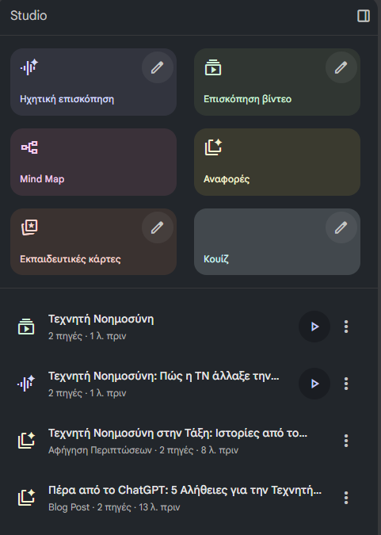
«Όλα όσα έχεις δημιουργήσει»
Κάθε δημιουργία συνοδεύεται από πληροφορίες όπως:
Τίτλος (π.χ. «Τεχνητή Νοημοσύνη στην Τάξη»)
Είδος περιεχομένου (Αφήγηση, Αναφορά, Βίντεο κ.λπ.)
Αριθμός πηγών που χρησιμοποιήθηκαν
Χρόνος δημιουργίας (π.χ. «1 λεπτό πριν»)
Υποενότητα 2.9
Διαχείριση κάθε δημιουργίας
Κάνοντας κλικ στις τρεις τελείες (⋮) δεξιά από κάθε έργο, εμφανίζονται δύο βασικές επιλογές:
Μετονομασία: για να αλλάξετε τον τίτλο της δημιουργίας και να την οργανώσετε πιο εύκολα.
Διαγραφή: για να αφαιρέσετε οριστικά μια δημιουργία που δεν χρειάζεστε.
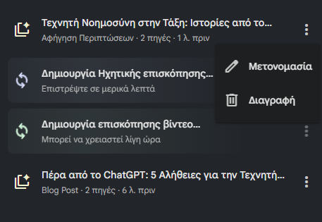
«Διαγραφή & Μετονομασία»
💡
Συμβουλή: Η μετονομασία είναι χρήσιμη όταν έχετε φτιάξει πολλές εκδόσεις της ίδιας αναφοράς ή οδηγού, ώστε να θυμάστε ποια είναι η τελική.
📌
Συνοψίζοντας: Η περιοχή Studio δεν είναι απλώς χώρος δημιουργίας, αλλά και χώρος οργάνωσης. Εδώ μπορείτε να διαχειρίζεστε εύκολα όλες τις μορφές περιεχομένου που έχει παράγει το NotebookLM, να τις μετονομάζετε, να τις ταξινομείτε ή να τις διαγράφετε.
Υποενότητα 2.10
Μετάβαση στην «Αρχική Σελίδα»
Για να μεταβείτε στην αρχική σελίδα, δηλαδή έξω από το σημειωματάριο στο οποίο έχετε δημιουργήσει το θέμα (για παράδειγμα, τεχνητή νοημοσύνη), μπορείτε να πατήσετε το εικονίδιο του NotebookLM, όπως φαίνεται στην εικόνα.
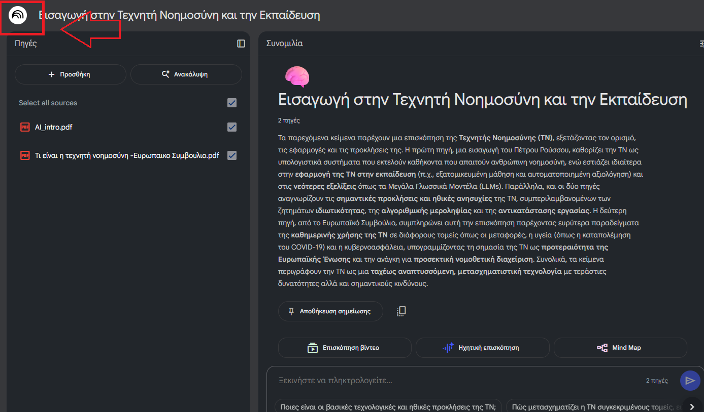
Υποενότητα 2.10
Το γενικό περιβάλλον του NotebookLM
Τότε θα μεταβείτε στο γενικό περιβάλλον του NotebookLM, όπου εκεί μπορείτε και πάλι να δημιουργήσετε ένα νέο σημειωματάριο, με ένα νέο θέμα προς μελέτη.
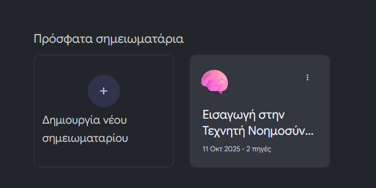
Όπως φαίνεται στην εικόνα, αριστερά υπάρχει η επιλογή «Δημιουργία νέου σημειωματαρίου» και δεξιά «Εισαγωγή στην Τεχνητή Νοημοσύνη», όπου είναι το θέμα που δημιουργήσατε.
Ανακεφαλαίωση
Ανακεφαλαίωση Ενότητας 3
Ας συνοψίσουμε τα βασικά σημεία της ενότητας:
Το NotebookLM είναι εργαλείο τεχνητής νοημοσύνης της Google — ένας «έξυπνος αναγνώστης» που δουλεύει πάνω στα δικά σας έγγραφα και σας βοηθά να μετατρέπετε τα δεδομένα σας σε γνώση.
Από προεπιλογή «διαβάζει» μόνο ό,τι του δώσετε (PDF, σημειώσεις, Google Docs, άρθρα) και δημιουργεί προσωπικό σημειωματάριο όπου απαντά σε ερωτήσεις, φτιάχνει περιλήψεις, συγκρίνει πηγές και συνθέτει οδηγούς μελέτης.
Η πρόσβαση γίνεται από το notebooklm.google αποκλειστικά με λογαριασμό Google, χωρίς εγκατάσταση, απευθείας από τον browser.
Κάθε Notebook είναι προσωπικός χώρος μελέτης· υποστηριζόμενοι τύποι πηγών: PDF, txt, Markdown, Ήχος (π.χ. mp3). Μπορείτε να απο-επιλέγετε πηγές ώστε το εργαλείο να απαντά μόνο από τις επιλεγμένες.
Οι απαντήσεις συνοδεύονται από παραπομπές που δείχνουν από ποιο αρχείο και σημείο προήλθε η πληροφορία, ενώ με την «Αποθήκευση σημείωσης» χτίζετε σταδιακά τον δικό σας οδηγό μελέτης.
Η ενότητα Studio μετατρέπει αυτόματα το υλικό σας σε: Ηχητική Επισκόπηση, Επισκόπηση Βίντεο, Mind Map, Κουίζ, Εκπαιδευτικές Κάρτες και Αναφορές (Οδηγός Μελέτης, Λευκή Βίβλος, Ανάρτηση Ιστολογίου κ.ά.) — χωρίς καμία επιπλέον εντολή.
Στο Studio γίνεται και η διαχείριση των δημιουργιών: μετονομασία και διαγραφή από το μενού με τις τρεις τελείες (⋮).
🚀
Συγχαρητήρια! Ολοκληρώσατε την Ενότητα 3. Μπορείτε να επιστρέψετε σε οποιαδήποτε διαφάνεια από το πλευρικό μενού για επανάληψη — η πρόοδός σας αποθηκεύεται αυτόματα.
Πηγές
Πηγές & σύνδεσμοι
Οι σύνδεσμοι που αναφέρονται στο εκπαιδευτικό υλικό της ενότητας:
Το NotebookLM διαφέρει από έναν γενικό βοηθό συνομιλίας σε ένα ουσιώδες σημείο: απαντά μόνο με βάση τις πηγές που του δίνετε. Είδατε πώς αξιοποιείται αυτό στην πράξη. Η παρούσα θεματική εξηγεί γιατί ο περιορισμός αυτός είναι πλεονέκτημα και πώς λειτουργεί τεχνικά.
Μαθησιακοί στόχοι της θεματικής
Να εξηγείτε τη διαφορά ανάμεσα σε απάντηση από τη γνώση του μοντέλου και σε απάντηση από πηγή.
Να περιγράφετε πώς εντοπίζεται το σχετικό απόσπασμα μέσα σε ένα μεγάλο έγγραφο.
Να διακρίνετε την παραπομπή από το συμπέρασμα και από το κενό πληροφορίας.
Να επιλέγετε και να προετοιμάζετε πηγές ώστε να δίνουν αξιόπιστα αποτελέσματα.
Θεωρία · 2
Γιατί το «κλείδωμα στις πηγές» αλλάζει το αποτέλεσμα
Ένα γλωσσικό μοντέλο παράγει τη γλωσσικά πιθανότερη συνέχεια. Όταν του λείπει πληροφορία, δεν έχει τρόπο να πει «δεν το ξέρω»: συμπληρώνει με κάτι εύλογο. Αυτή είναι η ρίζα των παραισθήσεων.
Το κλείδωμα στις πηγές αλλάζει το ερώτημα που τίθεται στο μοντέλο. Από «τι ξέρεις γι' αυτό;» γίνεται «τι λέει αυτό εδώ το κείμενο γι' αυτό;». Η δεύτερη διατύπωση είναι ελέγξιμη, επειδή η σωστή απάντηση βρίσκεται μπροστά και στα δύο μέρη.
Γενικός βοηθός
Βοηθός κλειδωμένος στις πηγές
Απαντά για οτιδήποτε, με ποικίλη αξιοπιστία.
Απαντά μόνο για όσα καλύπτουν οι πηγές σας.
Δύσκολος έλεγχος: δεν ξέρετε από πού προήλθε ο ισχυρισμός.
Άμεσος έλεγχος: κάθε ισχυρισμός δείχνει το σημείο προέλευσης.
Η ημερομηνία γνώσης περιορίζει την επικαιρότητα.
Η επικαιρότητα εξαρτάται από τα δικά σας αρχεία.
Το «δεν ξέρω» είναι σπάνιο.
Το «δεν αναφέρεται στις πηγές» είναι αποδεκτή και χρήσιμη απάντηση.
Το τίμημα είναι πραγματικό: ο βοηθός δεν θα σας πει κάτι που λείπει από το υλικό σας, ακόμη κι αν είναι κοινή γνώση. Η επιλογή των πηγών γίνεται έτσι η σημαντικότερη απόφαση της εργασίας.
Θεωρία · 3
Τεμαχισμός και ανάκτηση αποσπασμάτων
Πώς βρίσκεται το σωστό σημείο μέσα σε εκατοντάδες σελίδες; Με μια διαδικασία τεσσάρων βημάτων, κοινή σε όλα τα εργαλεία που στηρίζονται σε πηγές.
Βήμα
Τι συμβαίνει
1. Τεμαχισμός
Κάθε πηγή κόβεται σε αποσπάσματα λίγων παραγράφων.
2. Ευρετηρίαση
Κάθε απόσπασμα μετατρέπεται σε διάνυσμα που αποτυπώνει το νόημά του.
3. Ανάκτηση
Η ερώτησή σας γίνεται επίσης διάνυσμα και επιλέγονται τα πλησιέστερα αποσπάσματα.
4. Σύνθεση
Τα επιλεγμένα αποσπάσματα δίνονται στο μοντέλο, το οποίο συντάσσει την απάντηση με παραπομπές.
⚠️
Πού αστοχεί: αν η κρίσιμη πληροφορία είναι μοιρασμένη σε δύο απομακρυσμένα σημεία, ή αν βρίσκεται σε εικόνα χωρίς κείμενο, ή αν το έγγραφο είναι σαρωμένο χωρίς αναγνώριση χαρακτήρων, η ανάκτηση μπορεί να μη φέρει το σωστό απόσπασμα. Η απάντηση τότε είναι ελλιπής, αν και διατυπωμένη με βεβαιότητα.
✅
Πρακτική συνέπεια: προτιμήστε αρχεία με πραγματικό κείμενο αντί για σαρώσεις, με σαφείς επικεφαλίδες και λογική δομή. Ένα καλά οργανωμένο έγγραφο δίνει καλύτερα αποτελέσματα από ένα μεγαλύτερο αλλά άναρχο.
Θεωρία · 4
Παραπομπή, συμπέρασμα και κενό πληροφορίας
Σε μια απάντηση που στηρίζεται σε πηγές συνυπάρχουν τρία διαφορετικά είδη πρότασης. Η διάκρισή τους είναι η ουσία της κριτικής ανάγνωσης.
Είδος
Παράδειγμα διατύπωσης
Πώς ελέγχεται
Παραπομπή
«Η μελέτη αναφέρει ποσοστό 43%.»
Ανοίγετε την πηγή και εντοπίζετε τον αριθμό.
Συμπέρασμα
«Άρα η τάση είναι ανοδική.»
Ελέγχετε αν προκύπτει λογικά από τα δεδομένα των πηγών.
Κενό
«Δεν αναφέρεται στις πηγές.»
Το αποδέχεστε ως χρήσιμη πληροφορία και αναζητάτε πρόσθετη πηγή.
Μικρή άσκηση
Η απάντηση γράφει: «Το πρόγραμμα ήταν επιτυχημένο, καθώς οι συμμετοχές αυξήθηκαν κατά 12%.» Πόσα είδη πρότασης περιέχει;
Δείτε ενδεικτική απάντηση και εξήγηση
Δύο. Το «αυξήθηκαν κατά 12%» είναι παραπομπή και ελέγχεται στην πηγή. Το «ήταν επιτυχημένο» είναι συμπέρασμα και προϋποθέτει κριτήριο επιτυχίας που πρέπει να ορίζεται κάπου. Αν το κριτήριο δεν υπάρχει στις πηγές, το συμπέρασμα είναι δική σας ευθύνη και όχι εύρημα.
Αυτοαξιολόγηση
Ελέγξτε την κατανόησή σας στη θεωρία
Απαντήστε νοερά και μετά ανοίξτε κάθε απάντηση. Οι ερωτήσεις είναι διαμορφωτικές και δεν επηρεάζουν τη βαθμολογία της τελικής αξιολόγησης.
Ερώτηση 1
Γιατί ένας βοηθός κλειδωμένος στις πηγές παρουσιάζει λιγότερες παραισθήσεις;
Δείτε ενδεικτική απάντηση και εξήγηση
Επειδή το ζητούμενο αλλάζει: δεν καλείται να ανακαλέσει γνώση, αλλά να αποδώσει περιεχόμενο που βρίσκεται μπροστά του. Παράλληλα, του δίνεται αποδεκτή εναλλακτική διατύπωση, το «δεν αναφέρεται», που δεν υπάρχει σε έναν γενικό βοηθό.
Ερώτηση 2
Ανεβάσατε σαρωμένο PDF και ο βοηθός δεν βρίσκει τίποτα. Ποια είναι η πιθανότερη αιτία;
Δείτε ενδεικτική απάντηση και εξήγηση
Το αρχείο περιέχει εικόνες σελίδων και όχι κείμενο, οπότε δεν μπόρεσε να γίνει τεμαχισμός και ευρετηρίαση. Χρειάζεται αναγνώριση χαρακτήρων ή αντικατάσταση με έκδοση που περιέχει πραγματικό κείμενο.
Ερώτηση 3
Δύο πηγές σας δίνουν διαφορετικό αριθμό για το ίδιο μέγεθος. Τι κάνετε;
Δείτε ενδεικτική απάντηση και εξήγηση
Δεν επιλέγετε αυθαίρετα. Ελέγχετε ημερομηνία, μεθοδολογία και ακριβή ορισμό του μεγέθους σε κάθε πηγή. Συνήθως οι αριθμοί δεν είναι αντικρουόμενοι αλλά μετρούν ελαφρώς διαφορετικά πράγματα. Στο τελικό κείμενο αναφέρετε και τα δύο, με τη διευκρίνιση.
Τα παραδείγματα και οι πίνακες είναι διδακτικές κατασκευές του μαθήματος και δεν αποτελούν μετρήσεις συγκεκριμένου προϊόντος.
Εργαλείο μαθήματος
Ο βοηθός του μαθήματος
Κάτω δεξιά σε κάθε οθόνη θα βρείτε το κουμπί «Βοηθός μαθήματος». Είναι ένας μικρός συνομιλητής που γνωρίζει το περιεχόμενο αυτής της ενότητας και σας βοηθά να βρείτε γρήγορα ό,τι ψάχνετε, χωρίς να ξεφυλλίζετε διαφάνειες.
💬
Δοκιμάστε τον τώρα. Ρωτήστε τον με δικά σας λόγια, όπως θα ρωτούσατε έναν συνάδελφο. Θα σας απαντήσει και θα σας πάει με ένα κλικ στο σημείο όπου βρίσκεται η απάντηση.
Τι μπορείτε να τον ρωτήσετε
Ορισμούς: «τι είναι η παραπομπή σε πηγή;»
Διαδικασίες: «πώς ανεβάζω πηγές βήμα βήμα;»
Παραδείγματα: «δείξε μου ένα παράδειγμα σύνοψης»
Προσανατολισμό: «περιεχόμενα» ή «πού βρίσκομαι;»
Συνέχεια: «πες μου περισσότερα», για να συνεχίσει από εκεί που σταμάτησε
🔒
Ο βοηθός δουλεύει μέσα στον δικό σας υπολογιστή, πάνω στο υλικό του μαθήματος. Δεν στέλνει πουθενά τις ερωτήσεις σας, δεν τις αποθηκεύει και λειτουργεί ακόμη κι όταν δεν έχετε σύνδεση στο διαδίκτυο.
Υπάρχει και μια διδακτική πλευρά. Ο βοηθός εντοπίζει κείμενο που υπάρχει ήδη, αντί να παράγει καινούργιο. Γι’ αυτό δεν μπορεί να σας πει κάτι που δεν γράφεται πουθενά στο μάθημα, αλλά ούτε και να επινοήσει. Η ίδια διάκριση, ανάμεσα στην ανάκτηση και στην παραγωγή, βρίσκεται πίσω από κάθε σύστημα τεχνητής νοημοσύνης που στηρίζεται σε πηγές.